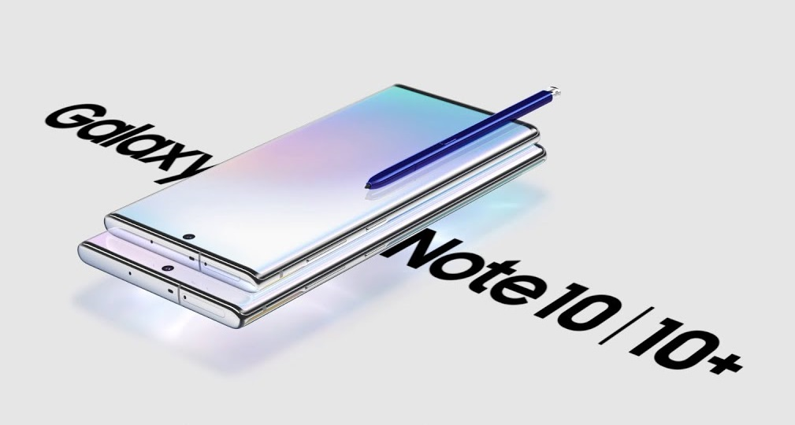

Pour conclure, le Samsung Galaxy Note 10+ est un magnifique smartphone qui a ses avantages et ses inconvénients mais qui peut plaire à beaucoup de personnes.
Il a un design splendide, de belles performances, avec de nombreux capteurs photo et un écran irréprochable qui contribue cependant à son prix exorbitant et sa fragilité accrue.
Nous espérons que ce site vous a plu. Il a été fait par Jonathan et Bastien. Si vous avez des commantaires constructifs à nous faire parvenir, veuillez vous diriger vers le formulaire, nous serions heureux de prendre en compte votre avis et d'y répondre.
